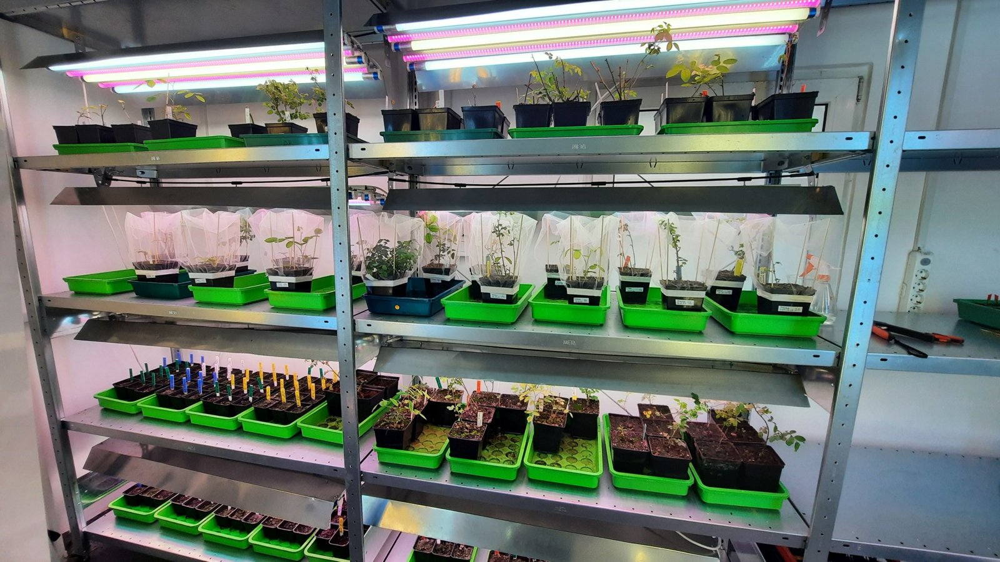
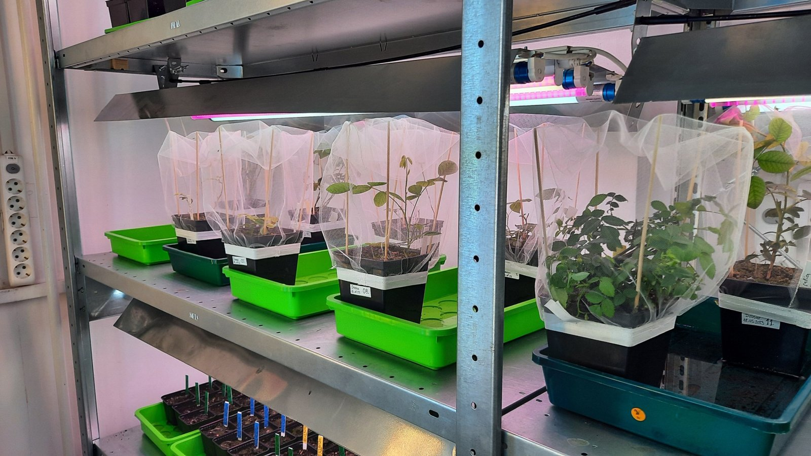
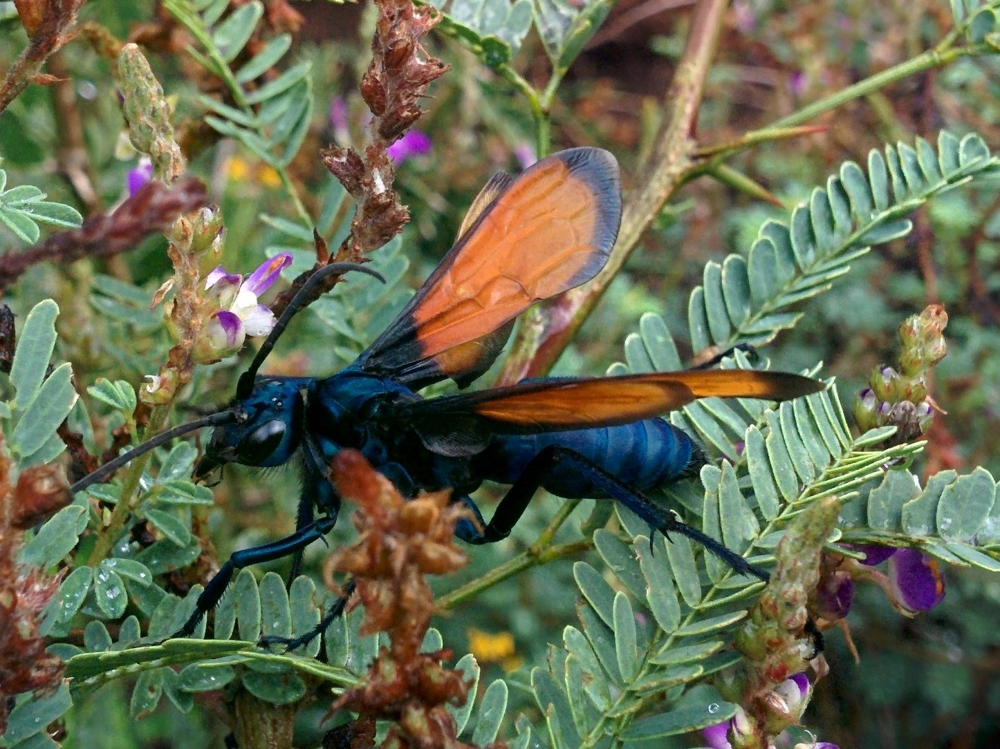
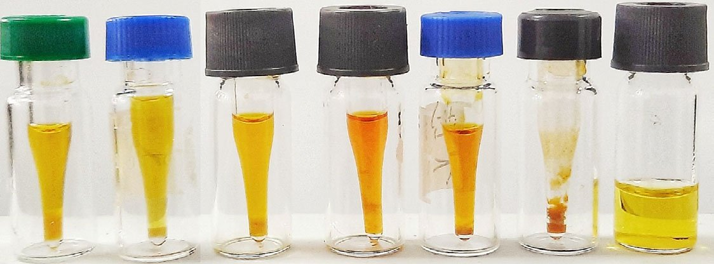

Our research primarily aims to elucidate biochemical responses of wild roses to herbivory. Through carefully designed experimental setups, we analyse the changes in secondary metabolites and other compounds triggered by herbivore interactions. This approach enables us to gain insights into the defence mechanisms employed by wild roses and their potential implications for various industries.

We acquire knowledge of different wild rose species, studying them within controlled laboratory environments. We are focusing on understanding interactions between herbivores and the secondary metabolites of these captivating plants. Our research also aims to deliver valuable data and products based on wild roses for pharmacology and cosmetics.

Collaboration is important. We foster interdisciplinary partnerships with researchers, industry experts, and stakeholders to catalyse innovation and translate our findings into real-world applications. By fostering an environment of creativity and collaboration, we strive to push the boundaries of botanical research and unlock the neglected potential of wild roses.

Whether you're a researcher, industry professional, or simply intrigued by the enchanting world of wild roses, we invite you to join us on our efforts. Explore our website to learn more about our ongoing projects, publications, and opportunities for collaboration. Together, let's unlock the secrets of wild roses and harness their transformative power for the betterment of society. Welcome to the RoseFarm Lab, where botanical exploration meets scientific innovation.
